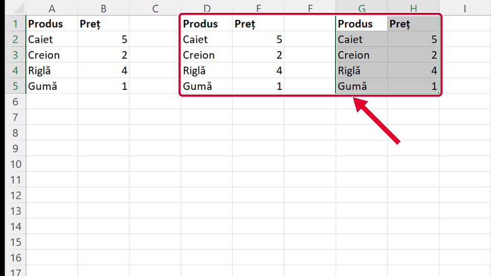
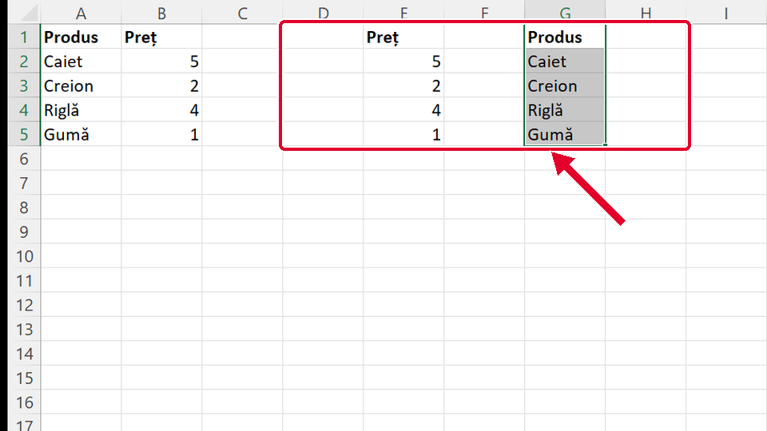
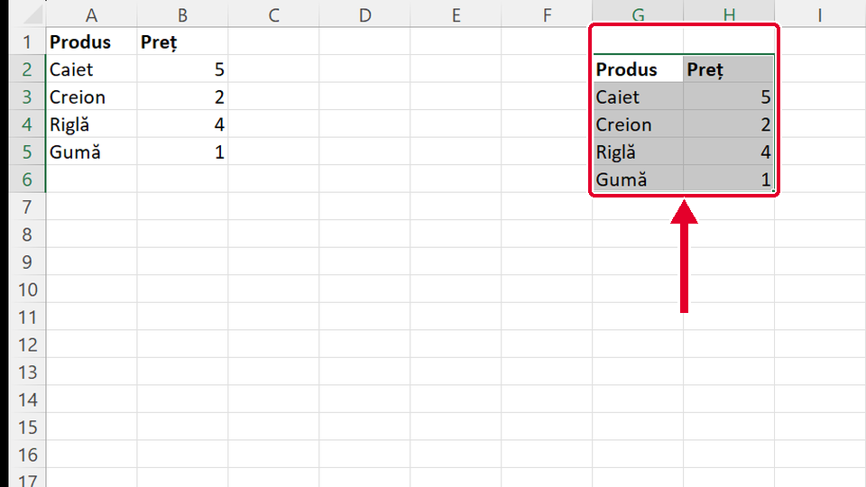

Început
Muți un tabel cu Ctrl+X și Ctrl+V
Taste: Spațiu = pauză / continuă · ← și → = pasul anterior / următor · cu Tab ajungi la „Rulează singur”; acolo Spațiu îl pornește sau îl oprește. Poți apăsa și pe film.

Legat de asta
Se deschid într-o filă nouă, ca să nu pierzi filmul de aici.
- ÎnainteCopiezi un tabel cu Ctrl+C și Ctrl+V ↗
Copiezi tabelul cu Ctrl+C, Copiere (Copy), și Ctrl+V: originalul rămâne pe loc.
- Același gestScris îngroșat cu Ctrl+B ↗
Selectezi la fel, trăgând de la o celulă la alta, apoi apeși Ctrl+B: scrisul se îngroașă.
Dacă nu-ți iese
Alege ce vezi pe ecran.
Tabelul a apărut în G1:H5, dar a rămas și în D1:E5. S-a copiat, nu s-a mutat.

De ce: Ai apăsat Ctrl+C, Copiere (Copy), în loc de Ctrl+X. Copierea lasă tabelul și în locul vechi.
Ce faci:
- Apeși Ctrl+Z: copia din G1:H5 dispare.
- Selectezi iar D1:E5 și apeși Ctrl+X, Decupare (Cut). X seamănă cu o foarfecă.
- Dai clic pe G1, apoi Ctrl+V.
Taste: Ctrl+Z · Ctrl+X · Ctrl+V
În coloana G au venit doar produsele; prețurile au rămas în coloana E.

De ce: Ai dat drumul la mouse pe D5, înainte de coloana E. Decuparea a luat doar ce era selectat.
Ce faci:
- Apeși Ctrl+Z.
- Selectezi D1:E5, cu ambele coloane: tragi până la E5.
- Ctrl+X, clic pe G1, Ctrl+V.
Taste: Ctrl+Z · Ctrl+X · Ctrl+V
Tabelul a ajuns în G2:H6, cu un rând mai jos decât trebuia.

De ce: Ai dat clic pe G2 înainte de lipire. Tabelul se lipește cu colțul de sus în celula pe care ai dat clic.
Ce faci:
- Apeși Ctrl+Z: tabelul se întoarce în D1:E5.
- Selectezi iar D1:E5 și apeși Ctrl+X.
- Dai clic pe G1, colțul de sus al locului nou, apoi Ctrl+V.
Taste: Ctrl+Z · Ctrl+X · Ctrl+V